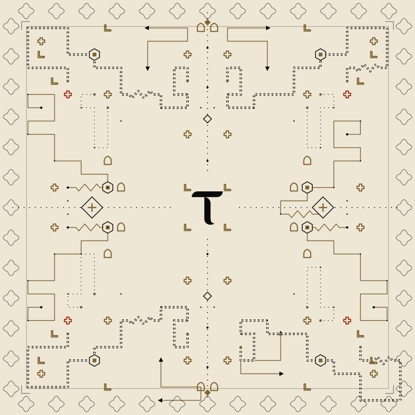
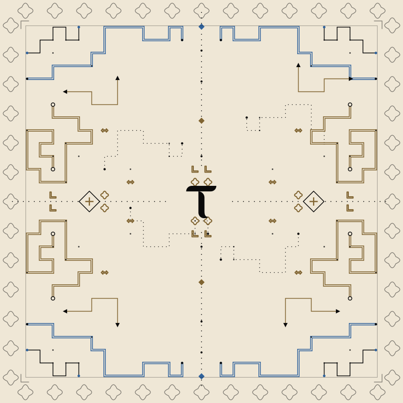
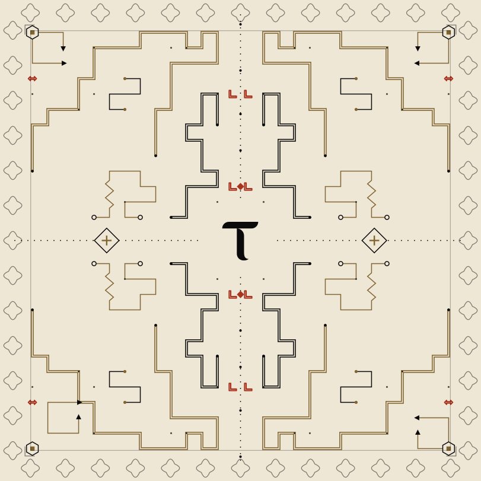
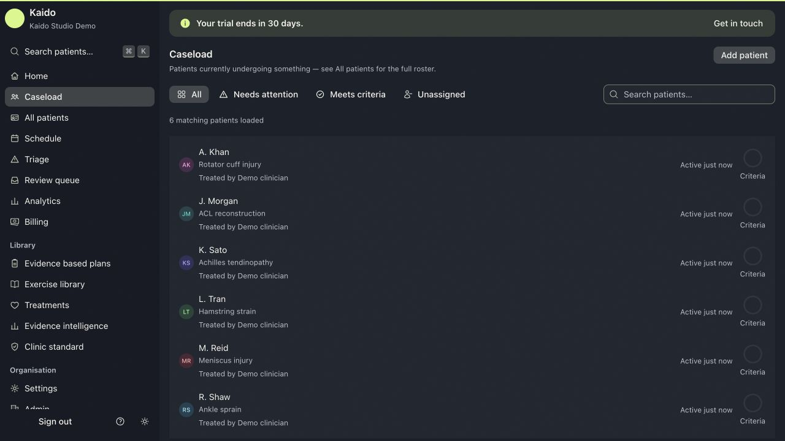
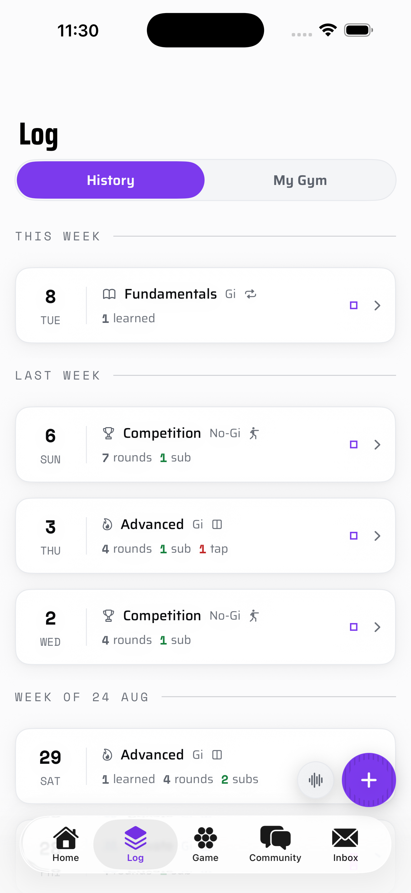
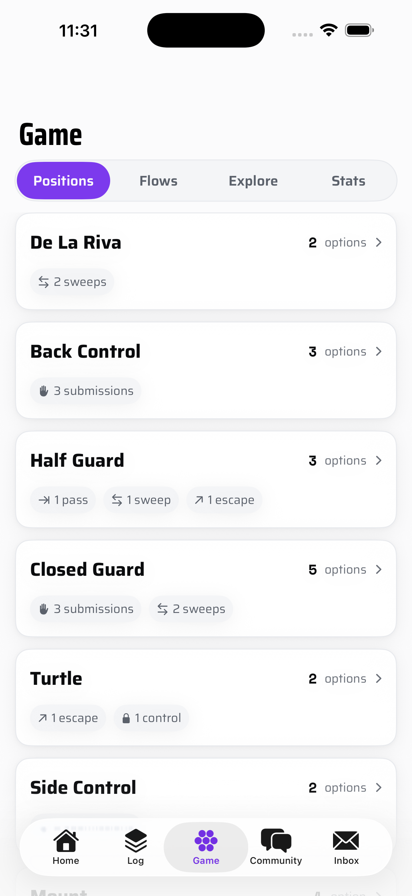

Brand, interface and code. One connected practice.
CYBER:CYBER
cyber:cyber is an independent studio shaping brands and building distinctive digital products.
Selected work
Bittensor



Granite
Strength for the
sport you play.
One programme connects the week, the coach and the training session.


Kaido

Frame
A session ends.
The record grows.
Training history and technique organisation, connected in one product.


Dan Andrews
A decade across product, brand, interface and motion, including previous work with Spotify, Epic Games and Dell.
I bring the identity of a product, the way it behaves and its implementation into one piece of work.
Client work and my own products keep the practice close to making, testing and maintaining software.
You work directly with me. I stay with the product from the first direction through to implementation.
iamdanandrews.com ↗Work together
For founders shaping a first release and teams improving an existing product. Three ways to bring direction, identity and experience together.
Product Direction
Product Release
Design Partnership
Questions
How the work is scoped, shared and built.
What happens after launch?+
The handover, documentation and support period are agreed in the release scope. Continued improvements can be commissioned separately or through a Design Partnership.
What can I hire you for?+
A focused direction engagement, a scoped product release, or ongoing design and technical work with your team. The three engagement options and their starting prices are above.
How is delivery organised?+
I lead identity, interface and implementation together within an agreed scope. Your engineers can handle the build where that is the right arrangement. Specialist needs and larger programmes are discussed before an engagement is agreed.
What happens if the scope changes?+
We agree the scope and price before work starts. New requirements are scoped and quoted separately, so the trade-offs stay visible.
Can you work with our engineers?+
Yes. Product Direction and Partnership can focus on brand, interface and technical direction while your team handles the build.
How long does the work take?+
Product Direction runs for one or two weeks. Builds are scoped around the product and its requirements; the timeline is agreed with the scope.
How will I see progress?+
You work directly with me, and the work is shared as it develops. Design and implementation can be reviewed together rather than waiting for a final handover.
Who does the work?+
Dan Andrews, a designer in London with a decade across brand, product, motion and interaction, including work with Spotify, Epic Games and Dell. More about me ↗.